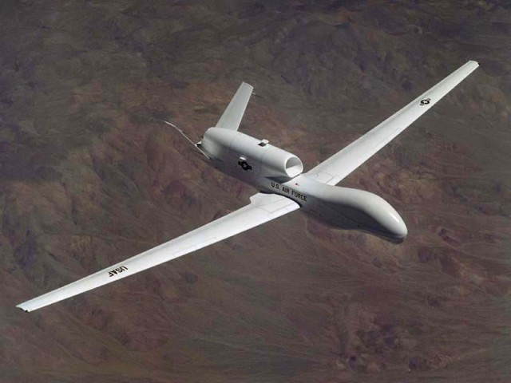

Unmanned Aerial Vehicles Up, Pilots Down
In the near future it's likely that airplane pilots will not actually venture into the air. Most 'pilots' will instead 'fly' Unmanned Aerial Vehicles (UAVs) from ground-based virtual cockpits. This trend is already evident in the military, but it is poised to extend to and transform all branches of piloted aerospace vehicles.
Global Hawk UAVImage courtesy of US Air Force
Hazardous Environments
Flying an airplane in a war-zone is clearly hazardous to the life of a pilot. Recent UAV deployments during the Iraq War have ably demonstrated that certain missions can be flown with the 'pilot' safely grounded; sometimes in a control center a continent away from the war.
Other hazardous environments where UAVs are either being used or being evaluated for use include:
- Search and rescue flights
- Collecting real-time data on hurricanes to better predict their strength and path
- Flying over inhospitable areas, such as the Antarctic ice fields to collect data for predictive climate models
- Reconnaissance flights in the Martian atmosphere
UAV Features
While safety is a major factor in removing a human pilot and using a UAV, there are also other benefits to keeping pilots on the ground. A UAV does not need to centralize the airplane controls around a pilot and so critical systems can be dispersed throughout the UAV airframe, making it less vulnerable to attack. Also there is no need for crew escape systems (e.g., ejection seat) or life support systems (e.g., air supply). Without these systems a combat UAV can be more optimally configured and carry a higher payload or more fuel.
In a combat situation the ability to sustain high G loading during maneuvers is critical for survivability. The weak link in high G performance is the pilot, who is likely to pass out; however the airframe structure could be designed to withstand a much higher G loading.
 Helios Prototype: Solar-powered flying wingImage courtesy of NASA
Helios Prototype: Solar-powered flying wingImage courtesy of NASA
Clearly, for combat airplanes there is a strong case for UAVs. An equally strong case can be made for UAV use in surveillance flights. Typically surveillance operations require that an airplane fly to a destination and loiter to observe and collect data. The duration of such flights can be extreme, pushing the fatigue limits of humans. UAVs don't suffer from fatigue - just provide them with enough fuel and they can loiter all day. If you broaden your definition of fuel to include alternative fuel sources such as solar power, then theoretically such airplanes could loiter for days.
Augmenting traditional flight control systems with intelligent software systems (smart autopilots) can make flying more forgiving of operator mistakes and make flying easier to learn. This has the potential to open up the flying of UAVs to a generation who have developed lightning reflexes while playing video games.
 Wasp Micro Air Vehicle
Wasp Micro Air Vehicle
Once you start designing airplanes without pilot,s the vehicles can be miniaturized to better fit their environment. Electronic control systems are small enough such that Micro Air Vehicles (MAVs) or Miniature Unmanned Aerial Vehicles (MUAVs) can now fulfill specialist surveillance roles, such as the Raven used by the Army.
The Achilles heel of UAVs is the need for a fast, reliable and secure communication channel - without it UAVs are useless. More advanced UAVs incorporate a degree of autonomy - the ability to make decisions without guidance - but this is an ongoing research topic.
The Future
The nature of UAV technology means that relatively inexpensive vehicles can be built and tested by anyone. There are even flying toys that are exploiting this technology just for fun. On the more serious side are the Design-Build-Fly and MAV student competitions that are grooming the next generation of aerospace engineers for the this future where pilots stay on the ground.
If personal air vehicles (such as flying cars) are to become a reality for the masses, then a safer and more automated method of flying is sorely needed. Surely smart automated UAV flight control systems have a role to play here too.
Given the more liberal design constraints on UAVs, they are likely to depart from what we recognize as a traditional airplane configuration. Such a departure means that historical flight data and "rules of thumb" won't be applicable to analyze future UAV concept designs. This scenario is ideal for Computer-Aided Engineering (CAE) analysis tools such as Computational Fluid Dynamics (CFD), which can rapidly build up a new flight performance database from scratch, reducing the need for expensive wind tunnel and flight tests.
Feedback
Questions? Ideas? Problems?

Recent blog posts
- CFD Simulates Distant Past
- Background on the Caedium v6.0 Release
- Long-Necked Dinosaurs Succumb To CFD
- CFD Provides Insight Into Mystery Fossils
- Wind Turbine Design According to Insects
- Runners Discover Drafting
- Wind Tunnel and CFD Reveal Best Cycling Tuck
- Active Aerodynamics on the Lamborghini Huracán Performante
- Fluidic Logic
- Stonehenge Vortex Revealed as April Fools' Day Distortion Field
 Get our Blog feed
Get our Blog feed
Comments
UAV Shortage
USA TODAY reports "The military's fleet of drones [UAVs] has increased from 167 [in 2003] unmanned planes to 5,331 [in 2008]," but still the Pentagon cites a shortage of UAVs. Just shows how indispensable UAVs have become to the military.